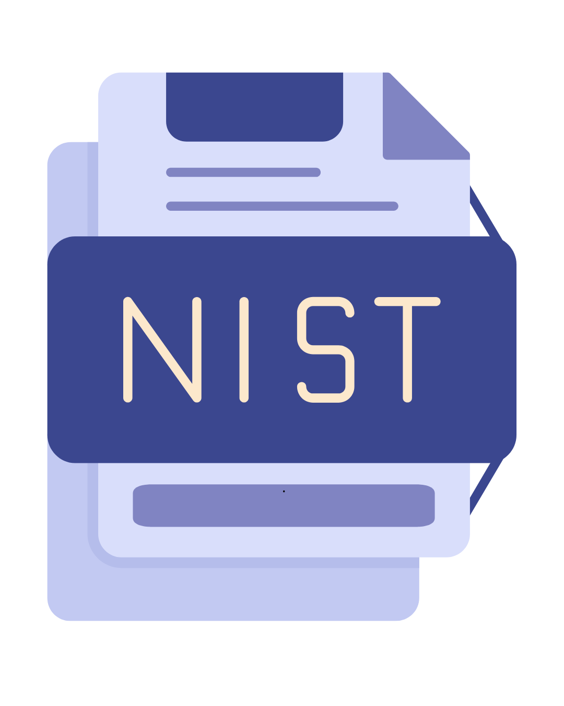
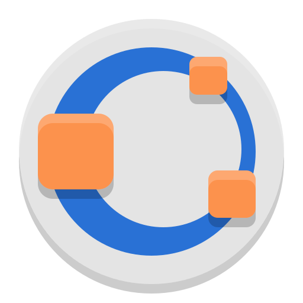

Actividad 2
Principales Metodologías de Seguridad Informática
ISO/IEC 27001

Características:
- Es una norma internacional para la gestión de la seguridad de la información.
- Permite establecer, implementar, mantener y mejorar continuamente un Sistema de Gestión de
Seguridad de la Información (SGSI).
- Basada en la identificación de riesgos y aplicación de controles adecuados.
Ejemplo: Empresas como bancos y aseguradoras la usan para proteger datos
confidenciales de clientes y cumplir con regulaciones internacionales.
NIST Cybersecurity Framework

Características:
- Establece un marco de trabajo con cinco funciones clave: Identificar, Proteger, Detectar,
Responder y Recuperar.
- Proporciona pautas flexibles y escalables para mejorar la seguridad cibernética.
- Útil tanto para organizaciones del sector público como privado.
Ejemplo: Agencias gubernamentales de EE.UU. y grandes corporaciones lo utilizan para
estructurar sus estrategias de ciberseguridad.
COBIT

Características:
- Marco de gobierno y gestión de TI alineado con los objetivos empresariales.
- Incluye buenas prácticas para la auditoría, control y mejora de la seguridad informática.
- Ayuda a garantizar que la información de la empresa esté bien protegida y administrada.
Ejemplo: Grandes corporaciones utilizan COBIT para estructurar sus políticas de
seguridad y cumplimiento regulatorio.
ITIL

Características:
- Conjunto de mejores prácticas para la gestión de servicios de TI.
- Ayuda a las organizaciones a administrar incidentes, cambios y problemas de seguridad de manera
eficiente.
- Reduce tiempos de respuesta y mejora la continuidad del negocio.
Ejemplo: Empresas de tecnología aplican ITIL para gestionar incidentes de seguridad
y minimizar impactos en sus operaciones.
OCTAVE

Características:
- Metodología de gestión de riesgos enfocada en la protección de activos críticos de la
organización.
- Permite evaluar amenazas y definir estrategias de mitigación adecuadas.
- Proporciona un enfoque integral, considerando aspectos técnicos, organizativos y humanos.
Ejemplo: Empresas del sector financiero usan OCTAVE para evaluar y minimizar riesgos
en operaciones electrónicas.
Zero Trust
Características:
- Modelo de seguridad basado en la idea de que no se debe confiar en ningún usuario o dispositivo
por defecto.
- Requiere autenticación continua y monitoreo constante para minimizar riesgos.
- Implementado mediante el control de acceso basado en identidad y segmentación de redes.
Ejemplo: Empresas tecnológicas y financieras utilizan Zero Trust para reforzar la
seguridad en sus redes y prevenir accesos no autorizados.
Actividad 3
Equipos de Seguridad Informatíca
Antivirus
Es un software diseñado para detectar, bloquear y eliminar virus, malware y otras amenazas
informáticas.
Como se usa: Se instala en computadoras y servidores para escanear archivos en busca
de amenazas. Se actualiza regularmente para detectar nuevas amenazas.
Ejemplo de uso: Un antivirus como Kaspersky, Norton o Windows Defender protege las
computadoras de ataques de malware y ransomware.
Firewell
Un firewall es un sistema de seguridad que filtra el tráfico de la red, bloqueando accesos no
autorizados
Como se usa: Se configura en routers o servidores para controlar el tráfico entrante
y saliente de una red. Puede ser físico (hardware) o virtual (software).
Ejemplo de uso: Las empresas lo configuran para evitar ataques desde internet y
permitir solo conexiones seguras.
VPN

Una VPN cifra la conexión a internet para ocultar la dirección IP del usuario y proteger los datos de
navegación.
Como se usa: Se instala un software VPN y se elige un servidor seguro antes de
conectarse a internet.
Ejemplo de uso: Las empresas usan VPN para que sus empleados accedan a redes
internas de manera segura cuando trabajan de forma remota.
Sistema de Detección y Prevención de Intrusos (IDS/IPS)
Son herramientas que detectan y bloquean actividades sospechosas en una red antes de que causen daño.
Como se usa: SEl IDS (Detección de Intrusos) monitorea el tráfico de la red y alerta
sobre comportamientos sospechosos.
El IPS (Prevención de Intrusos) bloquea activamente ataques en tiempo real.
Ejemplo de uso: Una empresa usa Snort (IDS/IPS de código abierto) para detectar
ataques en su red corporativa.
Autenticación Multifactor (MFA)
Es un método de seguridad que requiere más de un factor para confirmar la identidad del usuario
(ejemplo: contraseña + código de verificación).
Como se usa: Se activa en cuentas de usuario y sistemas sensibles, combinando algo
que el usuario sabe (contraseña), algo que tiene (código en el celular) y algo que es (huella
dactilar).
Ejemplo de uso: Facebook permiten habilitar MFA con aplicaciones como Google
Authenticator.
Cifrado de datos (Discos duros encriptados)
El cifrado de datos en discos duros es un sistema de protección que cifra los datos almacenados en
discos duros o dispositivos de
almacenamiento para que no puedan ser leídos sin una clave de acceso..
Como se usa: Se activan sistemas de cifrado como BitLocker (Windows) o FileVault
(MacOS) en los discos duros para proteger los archivos.
Ejemplo de uso: Las empresas cifran sus discos duros para evitar que datos sensibles sean
robados si una computadora es extraviada o hackeada.
Actividad 4
Elementos de un Centro de Procesamiento de Datos (CPD)
| Elemento |
Características |
Estándares/Normas |
Ejemplo de Aplicación |
| Climatización |
Regulación de temperatura y humedad para evitar sobrecalentamiento. |
ASHRAE TC 9.9: Temperatura recomendada entre 18-27°C y humedad entre 20-80%. |
En grandes centros de datos como los de Google, se usan sistemas de refrigeración
líquida para optimizar la temperatura. |
| Sistemas de Energía |
Uso de UPS y generadores para evitar cortes de energía que afecten el CPD. |
IEEE 446-1995: Define estándares para sistemas de respaldo de energía. |
En empresas como Amazon Web Services, los CPD cuentan con redundancia energética para
evitar interrupciones. |
| Racks y Servidores |
Organización de servidores en estructuras diseñadas para optimizar espacio y
refrigeración. |
ANSI/EIA-310-D: Define tamaños estándar para racks de servidores. |
Los CPD de Facebook usan racks personalizados para aumentar la eficiencia de sus
servidores. |
| Cableado estructurado |
Uso de redes de cableado bien organizadas para garantizar conectividad estable. |
ANSI/TIA-568: Especifica estándares para redes de cableado en edificios y CPD. |
Los centros de datos de Microsoft Azure emplean cableado estructurado para evitar fallas
en la red. |
| Seguridad Física |
Control de acceso biométrico, videovigilancia y monitoreo en tiempo real. |
ISO/IEC 27001: Estándar internacional de seguridad de la información. |
Los CPD bancarios tienen áreas restringidas donde solo personal autorizado puede
ingresar. |
| Sistemas de Extinción de Incendios |
Uso de agentes químicos o gases inertes para proteger los equipos sin dañarlos. |
NFPA 75: Reglas de protección de equipos informáticos contra incendios. |
Los CPD de Apple usan sistemas de supresión de incendios a base de gases como FM-200.
|